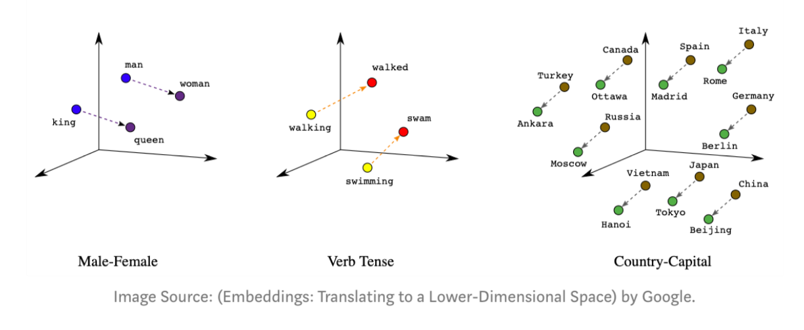
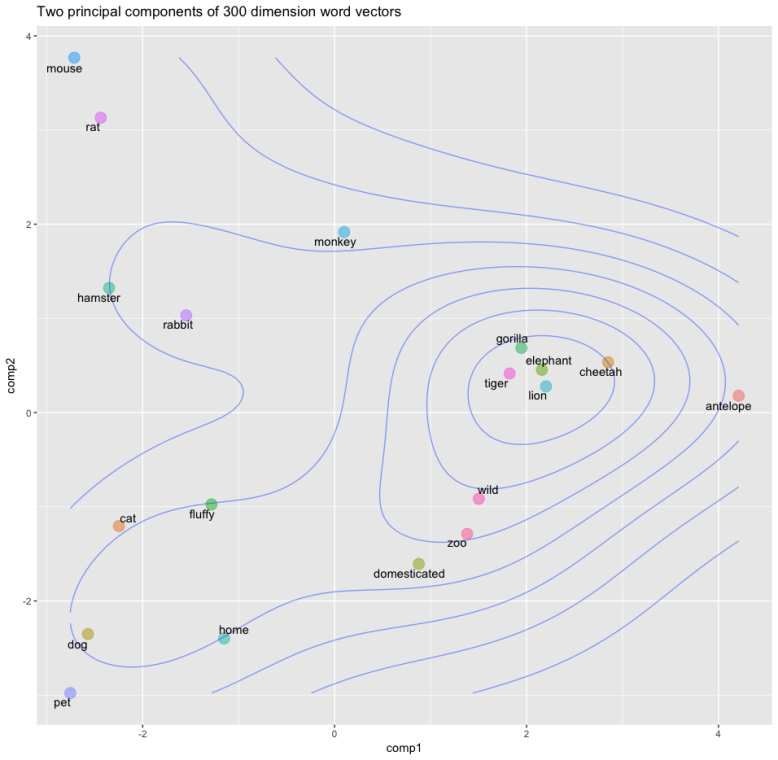
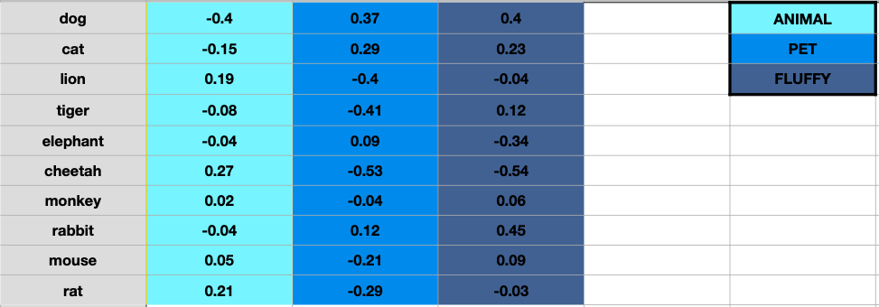

Identification Of Lexico-Semantic Word Relations - A Beginner's Guide
When I tell you “please bear with me”, you prepare yourself with the prospect of having to put up with me. If you are told “this teddy bear is fluffy”, your brain conjures up the image of a soft, lovable, furry toy that toddlers take to bed. If you read about bears being endangered, you think of a polar bear somewhere in the arctic sea ice. And when they will tell you on the news next week that the coronavirus crisis has plunged us into the worst bear market of our generation, you will automatically know that they are speaking about stocks. Your knowledge of the English language, along with your ability to understand context-dependencies, lexical and syntactic structures, and linguistic nuances helps you differentiate between four senses of the same word. You take it for granted and barely think about it but it has taken you years to acquire this ability. You learn, directly or indirectly, from your personal experiences. You learn through making associations between contexts, information, behaviours, and responses. The cascade of neurocognitive reactions that are set off as you subconsciously trigger a set of neutrons to communicate or listen is nothing short of a wonder. All of this together with your genetic endowment, makes language effortless for you.
On the other hand, understanding human language is a difficult problem for computers. Unlike you and me, computers do not have the privilege of language training the way we do. Even programming languages aren’t directly interpreted by them - they are first converted to low-level machine language. True machine code is merely a stream of raw, usually binary (1s and 0s), data. While humans acquire the ability to parse, process, infer and communicate, for the computer, any word picked out from a human language is unintelligible gibberish until it is adequately trained to understand the language.
This task of teaching and empowering machines to understand language just as we do, is called Natural Language Processing or NLP. NLP is a branch of artificial intelligence and it is an umbrella itself for many other subproblems. Daily examples of such problems are search, speech recognition, translation, summarization, question-answering etc. But all of this begs the question - if computers can understand nothing but 1s and 0s, how can computers make sense of the complexities of human language?
Word Vectors - Representing words in the form of numbers
Consider a space where all words in the English language are populated based on their semantic character. This imaginary space is such that words sharing similar descriptions or concepts share similar spacial properties. For instance, the words “cat” and “dog” would be in close vicinity of each other because the idea of a cat is very similar to the idea of a dog. Both are bipedal, domestic species that make for cute pets. For words that are not similar in meaning but represent the same concept, the positions of the words relative to each other encapsulate the relationship. In the semantic space, the relative position of “king” to the position of “queen” would be similar to the relative positions between “man” and “woman” or “boy” and “girl”, because the defining concept that separates the words in all three cases is the same – gender.

In the example semantic space below, you can see how the vectors for animals like lion, tiger, cheetah, and elephant are very close together. This is intuitive because they are often discussed in similar contexts; for example, these animals are big, wild and, potentially dangerous — indeed, the descriptive word “wild” maps quite closely to this group of animals.

Since words in their purest form cannot be interpreted by computers, we dumb them down by mapping the concepts and ideas that are inherent to the words into a representative set of numbers for each word. These sets of numbers are generated or “learned” algebraically by “neural networks” (a type of algorithm) and are called “word vectors”. These word vectors bear the ability to capture information about semantic relationships and syntactic structures across collections of words. Approaches to generating word vectors build on Firth’s (1957) distributional hypothesis which states:
“You shall know a word by the company it keeps.”
Put differently, words that share similar contexts tend to have similar meanings.
Word vectors can have any number of dimensions, although the standard number is usually 50, 100 or 300. Each of these dimensions represents a meaning or an abstract concept, the degree of which depends upon the numeric weight of the word on that particular dimension. Here is an example to illustrate this. Consider a lexicon of just ten words (rather than millions) and imagine that our word vectors are three-dimensioned (rather than three hundred).

In the figure above, for better understanding, we are imagining that each dimension captures a clearly defined meaning as opposed to an abstract idea. For example, if you imagine that the third dimension represents the concept of “fluffiness”, then each word’s weight on that dimension represents how closely it relates to that concept. It makes perfect sense for the rabbit to have the highest fluffiness factor at 0.45. This is quite a large simplification of word vectors as the dimensions do not hold such clearly defined meanings in reality, but it is a useful and intuitive way to wrap your head around the concept of word vector dimensions. We will not delve into the mathematical details of how neural networks learn word embeddings, because that would involve a long detour into linear algebra. But now you do know the underlying idea that drives the mathematics.
Lexical Relation Resolution
My current research work is focused on a problem called lexical relation resolution. A lexical relation is a culturally recognized pattern of association that exists between lexical items (a word, a part of a word, or a chain of words) in a language. For example, the lexical relation between “open” and “close” is that of antonymy, whereas “close” and “shut” are connected by a synonymy relationship. Other asymmetric lexico-semantic relations include co-hyponymy (e.g. phone ←→ monitor), hypernymy (e.g. phone → speakerphone) or meronymy (e.g. phone → mouthpiece), etc
Recognizing the exact nature of the semantic relation holding between a given pair of words is crucial and forms the basis for all the other NLP applications (question-answering, summarization, speech recognition etc.) that I mentioned above.
Several methods have been proposed in the past to discriminate between multiple semantic relations that hold between a pair of words. But, this continues to remain a difficult task, especially when it comes to distinguishing between certain relations. (e.g synonymy and hyperonymy).
Research Work - Patches, Attention, Cuboid
To solve this problem, our work proposes to investigate the introduction of related words in the neighbourhood of a particular word and gauge the effect it has on the prediction accuracy of word relations. Our original hypothesis was that if each word is augmented by the word vectors of a fixed number of neighbouring words (or “patches”), improved performance might be attained.
Many similarity measures exist to account for the lexical semantic relation that links two words. In our case, we use the cosine similarity measure which has proven to be successful in the past for a variety of semantic relations. To put it in plain speak, cosine similarity is a metric used to determine how similar two entities are. We extend the cosine similarity to patches in a straightforward manner. The similarity between two patches is the set of one-to-one cosine similarity measures between all words in their respective patches.
The next step consists of transforming a patch into a learning input, because although we can draw and visualise patches in our head, the computer needs it in the form of concrete, numeric data to understand it. The 300-dimensional word vectors of each word are compared to the 300-dimensional word vectors of all the words in the patch and a single similarity score for each comparison. In effect, we take 600 values (300 from each of the two words) and simplify them into one with the help of cosine similarity. If we set the no. of neighbours to be 10, that would give us 10 x 10 comparisons, resulting in 100 similarity values. These values together form the “intra-patch similarity table”. Given below are a examples of four different patches along with their intra-patch scores.

It was decided that in addition to preserving concept-centrality within patches, it also makes sense to preserve relation-centrality between patches. It is important to acknowledge that only certain words in the two patches may be central to the decision of whether two words are in a lexical semantic relation. If two patches share a set of close semantically related words that are central to both concepts, the decision process should intuitively be more reliable.
However, our initial findings showed that the direct introduction of neighbour words did not lead to improvements. We figured that this was mainly due to a loss of concept-centrality that took place as a result of the change in strategy. If word relations are to be assessed by juxtapositioning two patches instead of two words, the required focus on the original word may be diluted.
The next logical step was to somehow weigh the word vectors based on their centrality to the concept. To do this, we introduced an attention mechanism based on the PageRank algorithm (which is one of the algorithms used by Google for their web search. PageRank was developed to measure the importance of website pages). We use it to assign a weight of centrality to each of the word neighbours in the patch. The more a word is central in the patch, the higher the score it receives. These scores are then to be used as attention weights to the corresponding word vector representations of the neighbours. The objective of this mechanism is to improve the predictive ability of our system based on the importance score of each word vector in the patch. We found that when deployed in combination with the correct architecture, attention-adjusted patches bolstered our model and gave a significant boost to previous results. I would have to tread into extremely technical territory to explain the specifics of the architectures, so for now we will spare ourselves those details.
Indeed, average improvements can reach 10.6% for binary classification (to make a decision between two relations) and 8% for multi-class classification (decision between more than two relations) over non-patch baseline approaches. As things stand, we believe that we might get even better results if we construct a cuboid, where the word vectors of two words, instead of being collapsed to a single similarity value, are preserved to a greater extent by only compressing them from 600 dimensions to 300 dimensions. (We do this by taking the dot product between the two vectors. Dot product of two 300-dimensional vectors results in a new 300-dimensional vector). Our results with the cuboid have been promising and have shown an enhanced performance on our previous baselines. However, there are many more tests that the model needs to come through before it can be claimed as an outright upgrade over its predecessors. Our next step is to compare our results with models that attempt to solve the same problem. Whichever way it ends, I will be sure to update this blog on our progress.
As for NLP in general, there is no doubt whatsoever in saying that we are still decades, or at best, years, away from being anywhere close to designing an artificial intelligence that speaks and communicates like us. The amount of data needed today to train a computer well for the simplest of tasks is tremendous. We have neither reached the peak in terms of quality of data representations nor do we have enough computational power to scale models trained on current data representations beyond a particular extent.
On reflection though, it will never stop being crazy to me that with a little knowledge of mathematics, sufficient computational power and a decent familiarity with a programming language, you can teach a completely inanimate object to understand the language of our species. It is quite surreal when you think about it.
This blog post is based on the work carried out under the supervision of Prof. Gaël Dias. Other contributors to this work are his PhD students, Nesrine Bannour and Houssam Akhmouch.